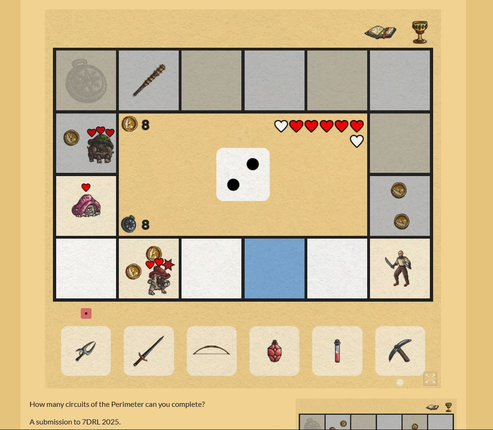
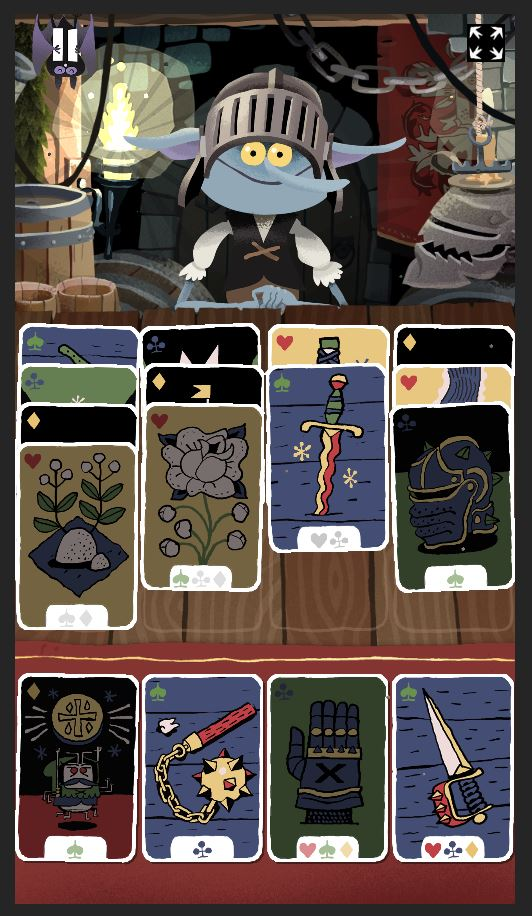
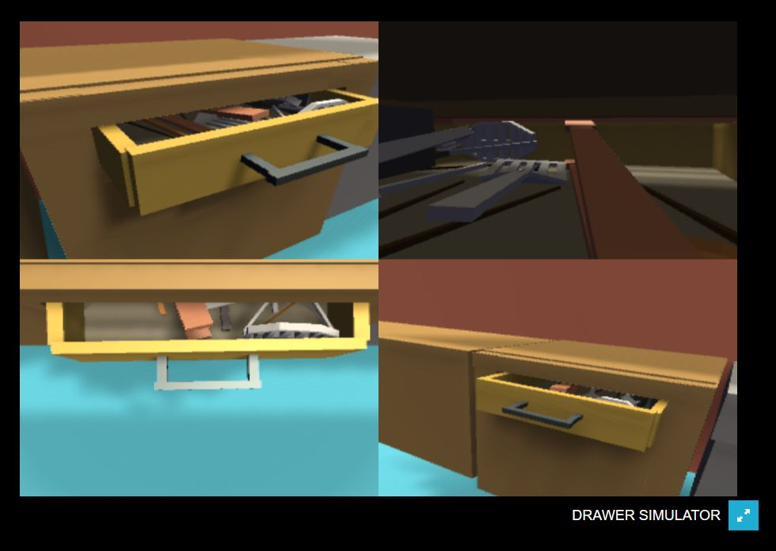

The 3 games I played: Zunil by PixiJS Gnomitaire by Arnold Rauers Drawer Simulator by Stephen Lavelle Zunil is a roguelike game where you have to budget your coins to manipulate the amount of tiles you move, strategize which to pickup that will benefit you the most, and try to kill enemies before they kill you. Each time you make it around the 16-tile board you earn a point, although there is one item in the game which lets you gain +1 additional point for each time you go around. This game can be extremely frustrating at times because it can be very rng-based. I like games where when you lose, you can blame it on yourself (or your teammates), instead of chance.

Gnomitaire is a card game where you play suits into different columns to try and empty your 16 deck. I assume was inspired by the game solitaire? I use the word "assume" because I still don't understand how solitaire works, as no one has ever wanted to teach me how to play. I tried playing the google solitaire only ever twice before, but could not understand how the game worked. Gnomitaire was easy to understand, especially because the game layed out the rules before I began. I thought that because I understood how to play Gnomitaire, I could give solitaire another shot... Unfortunantly I was wrong, solitaire is still very confusing. The one issue I had with Gnomitaire which I found was very frustrating was that you could end up in a situation that you have no way of getting out of. However, this is only when I played the "expert" difficulty, the normal version was pretty standard. This game definintly stimulates the submission aesthetic. I don't really like this genre much, and I don't think I will play Gnomitaire again, but I don't think it's a bad game by any standards and actually really enjoy how simple it is from a developer perspective.
Drawer simulator is a extremely simple game where you play as a kitchen drawer and try to wiggle your way beacuse kitchen utensils are keeping you stuck. This game is great, because it's dumb! And the reason it can be both great and dumb, is because it knows it's dumb which makes it funny. The game takes about a minute to beat, and after you beat the game you can fly the drawer around the kitchen room which is nice. The scenario of a stuck drawer is something that everyone has expierienced, which makes it relatable. It's also a strange thing to relate to because of how specific it is, and I think this specificity adds to the humor of the game. It's honestly impressive that someone was creative enough to make a simulator game that is about this one very specific thing. Something I noticed is that my partner wanted to break the game once he got the drawer loose which I found very amusing. The suprising thing is that he actually did manage to by clipping out of the collsion box into the eternal abyss. Also the whole time he did not choose to play in full-screen mode which I found peculiar because the window is very tiny if you don't.
A connection I made was definintly between Zunil and Gnomitaire, as both require some thinking. Gnomitaire is quite litterally a puzzle, and although puzzles should not involve rng mechanics, Zunil can feel like a puzzle at times too. Zunil is a true survival rogue-like, but I found that Gnomitaire also felt like this, especially after discovering there is a way to get in a dead-end situation where you have no option but to reset. Also, Both games follow the "high-fantasy" visual aesthetic with medieval items and magical creatures.